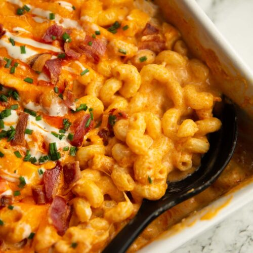

Mac and Cheese

A cook out staple to leave the whole community satisfied!
If you've ever been to a community bbq or cook out, you have probably feasted on
some delicious, ooey-gooey mac and cheese. There are hundreds of varieties of mac and cheese,
and hundreds more recipes for each. These recipes are usually held close to heart and are passed down
from generation to generation. Here is a simple mac and cheese recipe anyone can follow!
Ingredients
- 2 1/2 cups elbow macaroni
- 1/4 cup butter
- 1/4 cup all-purpose flour
- 1/2 teaspoon salt
- 4 cups milk
- 1 pound shredded cheddar cheese
- 1/4 cup butter, melted
- 1 sleeve buttery round crackers, crushed
Steps
- Preheat the oven to 350 degrees F (175 degrees C).
- Bring a large pot of lightly salted water to a boil.
Cook elbow macaroni in the boiling water, stirring occasionally,
until tender yet firm to the bite, about 8 minutes; drain well.
- Melt 1/4 cup butter in a large saucepan over medium heat.
Stir in flour and salt; cook, stirring constantly, for 2 minutes.
Whisk in milk and simmer, stirring frequently, until mixture thickens slightly,
about 5 minutes.
- Turn off the heat and stir in Cheddar cheese until cheese is melted.
Add macaroni and stir to coat; pour into a 9x13-inch baking dish.
Mix the remaining 1/4 cup of melted butter and crushed crackers together
in a bowl; scatter evenly over macaroni mixture.
- Bake in the preheated oven until golden brown on top, about 45 minutes.